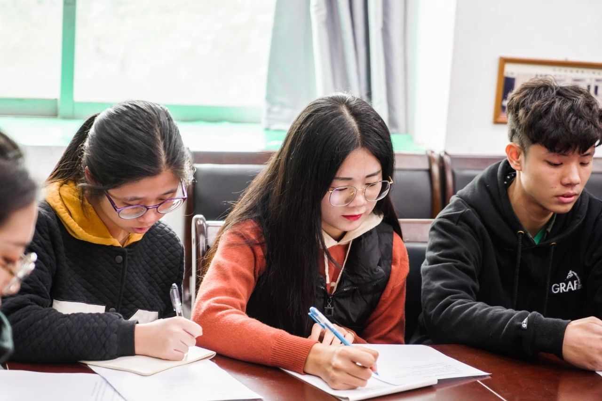

【校长有约，这个冬天我们红满堂见！】
上周校会君说过
“你的权益 我们在意 ”
所以
第十三期校长有约（学生专场）
将于12月16日（本周日）
与我们见面了
“你的权益 我们在意 ”
所以
第十三期校长有约（学生专场）
将于12月16日（本周日）
与我们见面了
|
校长有约（学生专场）是由校长带领各部 处（单位）负责人与各学院的学生代表、 学生组织进行面对面座谈交流，直接回应 或研究解决同学们学习生活中息息相关的 问题，并积极听取同学们对学校建设发展 的有关意见建议。 |
还记得今年六月的校长有约（学生专场）吗？
相信一直关注的小伙伴
一定很想知道这些提案的后续跟进吧
相信一直关注的小伙伴
一定很想知道这些提案的后续跟进吧
下面就跟着校会君
一起来回顾一下第十二期已解决落实的问题吧
一起来回顾一下第十二期已解决落实的问题吧
关于围绕就业质量设置课程体系的问题
研究生院围绕“就业质量”组织开设了相关公共选修课，引入了斯坦福大学、清华大学的相关慕课。同时，重新修订了农业和工程硕士专业学位研究生培养方案，进一步加强学生创新思维和实践能力培养。
关于加大硕士研究生出国访学比例的问题
研究生院积极争取高水平大学经费用于资助硕士生出国（境）短期访学，资助的硕士生出国（境）访学人数较去年提高了127%。今后，拟考虑开展“短-中-长”相结合的硕士生出国（境）访学、交流项目，进一步提高硕士生出国（境）访学比例。
建议研究生重视毕业学术论文撰写的问题
研究生院取消修满学分才能开题的相关规定，完善研究生学位论文撰写规范并纳入研究生新生入学教育中广泛宣传，且要求各学院根据自己学科特点制定撰写论文规范细则；执行学位论文相似性检测，严格把控学位论文送审、答辩、学位讨论等环节；出台《对抽检结果为“存在问题学位论文”的处理办法》，不断提高学位论文质量。
关于研究生与本科生创新创业教育分类指导的问题
创新创业学院支持研究生的创新创业科研计划，配合研究生院开展研究生科技创新能力培养的学术讲座、论坛，动员部署研究生紧密结合专业方向参与高水平的创新创业大赛和各类学科竞赛，指导研究生的创新创业教育。
关于加强智慧课室节能系统建设的问题
教务处回复，目前，新教务系统正处于试用与数据试迁移阶段，预计2019年5月前，教务模块和考务模块可正式上线，届时可将教室的排课、借用、排考状态推送给后勤处对接智慧课室节能系统，以便精准控制课室空调与照明，减少浪费。
关于大学生就业指导课程教学的问题
招生就业处通过完善就业创业教育教研室各项制度，开展针对性的教研活动和研讨会，采用“导师制”加大新教师的培养与督查等措施，进一步加强对任课教师的指导和督查。此外，通过开展“就业力提升”团队辅导工作坊进社区，支持学院在社区举办“过来人沙龙”系列讲座等，充分发挥社区成长服务中心对学生的就业指导作用。
关于提高教师指导学生科技竞赛积极性的问题
创新创业学院已协同研究生院和校团委修订了大学生学科竞赛奖励办法，待学校讨论通过，即可发文实施。该办法加大了对师生参与竞赛的支持与奖励力度，以便充分发挥指导教师和学生参与学科竞赛的积极性；教务处拟申请2019年高水平大学建设经费，增加学生到境外参加科技训练、学科竞赛等。
关于学生宿舍延长热水供应时间的问题
学生宿舍采取太阳能储水式供应热水，加热时间较长，每天供应热水量有限，建议学生适时适量使用热水。
关于学生宿舍热水卡现金充值的问题
后勤处计划对全校学生宿舍热水表进行更换，安装新款智能热水表,精确记录用水量,开发手机线上热水充值、消费、查询等功能。目前，已完成相关技术调试，正在进行支付系统调试，预计今年年底开始全面铺开改造。
关于学生宿舍区防盗安全的问题
学生工作部（处）已分批次对学生宿舍进行门禁和围闭建设。目前，燕山宿舍已安装门禁系统，启林南36栋完成人脸识别门禁监控系统试点；启林南北大围闭工程已完成，泰山区围闭工程基本完成，华山区围闭工程正中规划设计中。
关于优化图书馆藏书与扩大借阅权限的问题
图书馆已改进新生入馆教育的方式及培训内容。拟在不同媒介上进一步加强宣传力度，让读者充分了解图书馆藏书与借阅权限的有关规定。
关于在华山宿舍区安装自行车停放棚的问题
经学生工作部（处）实地勘察，华山8-13栋因宿舍楼栋格局设计限制，只能在宿舍楼进出入口空地划专门停车区域。现已将该空地铺广场砖、划黄线、放水马等，并安排每日整理摆放自行车，效果较好。
关于华山区手机通讯信号较弱的问题
泰山、华山区已开始安装“室分站”，因涉及施工图纸设计、楼栋管线布置、地面管道开挖等工程，工期较长，拟于本学期施工完毕并投入使用。其他宿舍区拟于2018年12月签订协议书，预计2019年上半年实现学生宿舍室内手机信号全覆盖。针对盲点区域，已与铁塔公司沟通，由其建设微站解决。
关于真维斯活动中心架空层规划立项与建设的问题
真维斯活动中心的消防双电源工程施工已完成，消防系统维修工作基本完成，待消防系统调试合格后申请消防验收。同时，该工程规划验收测量同步进行，测量完成后申报规划验收。
关于寻找空闲场地加以装修利用的问题
学生处已将文化长廊教五人行天桥桥底场地改造为两间物资房，经与校团委协商，其中一间给校学生会作为物资用房。
关于加强校医院信息公开的问题
校医院已通过企业号建设校医院直通车，定期推送医生排班更新情况，并结合学校工作节点及突发事件及时公示医院开诊情况等，拟拓宽其他信息公开渠道，更好地服务师生。
看了这么多的往期提案的跟进
你是否会更加期待
本期校长有约（学生专场）呢
你是否会更加期待
本期校长有约（学生专场）呢
第十三届校长有约（学生专场）预备会议于
12月14日中午12:30
在新学活203顺利召开
为正式座谈会有序进行提前做好准备
下面就跟着校会君的镜头一起看看吧
预备会议上
工作人员向学生代表介绍了
近几次校长有约（学生专场）的活动情况
同时为大家讲解了座谈会当天的流程安排和注意事项
12月14日中午12:30
在新学活203顺利召开
为正式座谈会有序进行提前做好准备
下面就跟着校会君的镜头一起看看吧
预备会议上
工作人员向学生代表介绍了
近几次校长有约（学生专场）的活动情况
同时为大家讲解了座谈会当天的流程安排和注意事项

回顾完预备会议
相信你和校会君一样
十分期待校长有约（学生专场）的正式座谈会吧
关注！速度！
今年冬天
因为在意
所以没有寒意
第十三期校长有约（学生专场）
我们红满堂见
相信你和校会君一样
十分期待校长有约（学生专场）的正式座谈会吧
关注！速度！
今年冬天
因为在意
所以没有寒意
第十三期校长有约（学生专场）
我们红满堂见
图文编辑 | 校会新媒体运营部 柳星宇
信息来源 | 校长办公室
视觉支持 | 校会新媒体运营部 贺振杨 林琳
微博@华南农业大学学生会
信息来源 | 校长办公室
视觉支持 | 校会新媒体运营部 贺振杨 林琳
微博@华南农业大学学生会